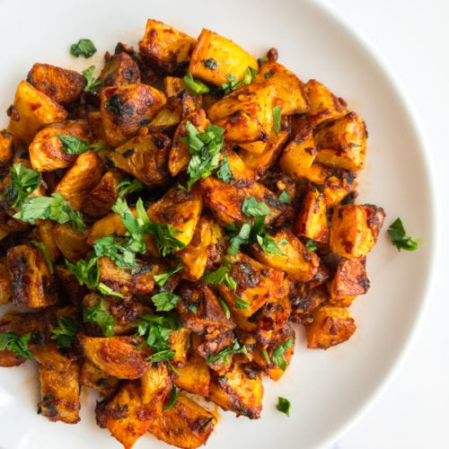

Spicy Potatoes

This is my own recipe that I created one day after being really hungry and only having potatoes to work with.
Ingredients
- Potatoes
- Chili
- Tomato Purée
- Salt
- Pepper
- Chipotle sauce
- Olive oil
Steps
- Preheat the oven to 190 degrees celcius.
- Cut the potatoes into small chunks.
- Add everything to a bowl and mix together thoroughly.
- Put on a baking tray lined with a baking sheet and cook for 25-35 minutes.
Home